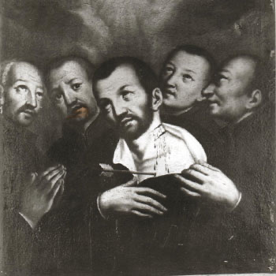

Isusovački blaženici
Brat
Bl. Franjo Aranha
1551. – 1583.
Isusovački brat iz Portugala gradio je crkve u indijskoj misiji na Salsetteu te s drugim misionarima podnio mučeništvo tijekom napada u Cuncolimu.
Tekst je preveden i prilagođen uz pomoć umjetne inteligencije.

Izvor slike
- Spomendan
- 4. veljače
- Zaštitništvo
- Nije navedeno u izvoru
- Životni vijek
- 1551. – 1583.
- Djelovanje
- Misije i evangelizacija · Pisanje, znanost i umjetnost · Svakodnevni rad i skrovita služba · Mučeništvo
- Razdoblje
- 16. stoljeće
- Ulazak u Družbu
- 1. studenoga 1571.
- Rođenje — dostupni podaci
- 1551.; dan i mjesec nisu potvrđeni u provjerenom izvoru.
- Mjesto rođenja
- Portugal (vjerojatno Braga)
- Datum smrti
- 25.07.1583.
- Mjesto smrti/mučeništva
- Cuncolim, Salcete (Salsette), Goa, Indija
- Okolnosti smrti/mučeništva
- Teško ranjen, zatim ubijen sjekirom nakon odbijanja poklonstva pred idolom.
- Uloga
- Brat
- Mučenik
- Da
- Ostale oznake
- Graditelj crkava i kapela u misiji Salcete
- Pripadnost
- Isusovac
- Drugi oblici imena
- Francisco Aranha · Francisco
- Napomene uz podatke
- Braga je u službenom isusovačkom životopisu navedena kao vjerojatno rodno mjesto.
Životopis
Francisco Aranha rođen je oko 1551. u Portugalu, vjerojatno u Bragi. U Gou je otišao povezano s obitelji svoga strica, prvoga goanskog nadbiskupa. U Družbu Isusovu stupio je kao brat 1. studenoga 1571. Prve je zadaće obavljao u kolegijima u Cochinu i Goi.
Oko 1577. premješten je u misiju Salsette. Posvetio se podizanju crkava i kapela. Povijesni katolički prikaz dodatno ga opisuje kao vješta crtača i graditelja: njegova se redovnička služba ostvarivala zanatom kojim je pomagao stvaranju prostora za crkveni život.
Pri napadu u Cuncolimu bio je teško ranjen sabljom i kopljem te ostavljen kao mrtav. Uspio se skloniti u raslinje, ali je pronađen. Prisiljen je stati pred religijski kip i tražilo se da mu se pokloni. Odbio je i bio ubijen. Njegova se završna odluka ne smije zamijeniti postupcima drugih članova skupine.
Zajednički povijesni okvir. Uz petoricu isusovaca stradali su i domaći kršćani te portugalski suradnici. Nakon pronalaska posmrtnih ostataka, tijela petorice prenesena su u Rachol, poslije u Gou. Stariji izvori opisuju i dugačak put crkvenoga priznanja: mučeništvo je potvrđeno u osamnaestom stoljeću, a skupina je proglašena blaženom 1893.
Tekst je preveden i prilagođen uz pomoć umjetne inteligencije.
Pročitaj više na izvornoj stranici ↗